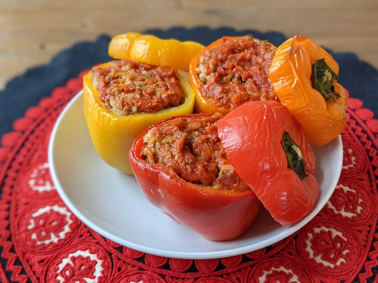

Smoked Chicken Breasts

World's Best Smoked Chicken Breasts
This smoked chicken breast recipe is a delicious and different way to enjoy chicken breasts, with plenty of smoky flavors. Brining the chicken before smoking allows it to stay moist and flavorful. They are a great addition to a salad, on a sandwich, or by themselves!
Ingredients
- 4 pounds skin-on, bone-in chicken breasts
- maple wood chips
- 4 cups water
- ¼ cup kosher salt
- 1 tablespoon cider vinegar
- 1 tablespoon brown sugar
Steps
- Gather all ingredients.
- Make brine: Combine water, kosher salt, brown sugar, and apple cider vinegar in a large bowl. Stir until salt and brown sugar are dissolved. Place chicken breasts into brine, cover, and refrigerate for at least 4 hours to overnight.
- Preheat an electric smoker according to manufacturer's directions to 225 degrees F (110 degrees C) using maple wood chips.
- Remove chicken breasts from brine and rinse under cold water. Pat dry and set aside.
- Make rub: Combine brown sugar, salt, black pepper, paprika, garlic powder, and onion powder in a bowl. Sprinkle dry rub all over chicken breasts and place skin-side up on a grill rack in the preheated smoker. Place a drip pan underneath.
- Smoke chicken breasts in the preheated smoker until chicken is no longer pink and the juices run clear, about 4 hours, adding maple wood chips as necessary to keep the smoke continuous. An instant-read thermometer inserted near the bone should read at least 165 degrees F (74 degrees C).